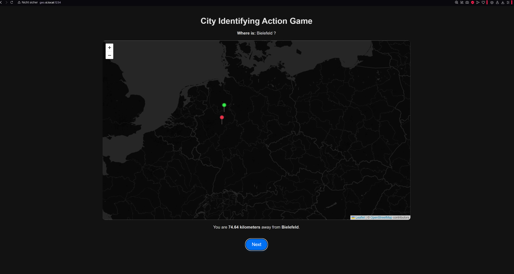
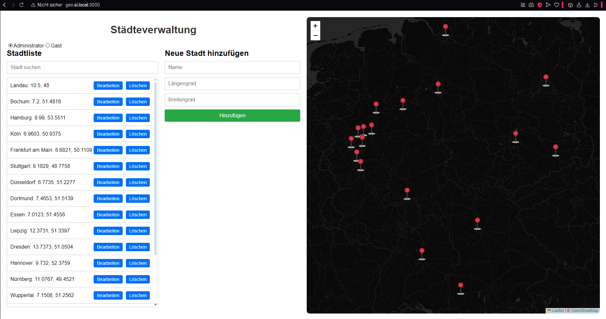

CIA
City identifiyg action game
Erstellt für: EDV-Schule Plattling
Abgegeben am: 15.01.2025
Beschreibung:
Das CIA-Projekt ("City Identifying Actiongame") ist ein interaktives Geolocation-Spiel mit Next.js/React zur spielerischen Vermittlung geografischen Wissens. Spieler schätzen Städte-Positionen auf Leaflet-Karten, System berechnet Distanz. Ergänzt durch Admin-Weboberfläche für CRUD-Geodaten (Städte: Name, Koordinaten, Owner) mit PostgreSQL/PostGIS und Row Level Security (RLS) für Zugriffssteuerung (Admin/Guest). Alles in Docker-Containern (DB, Adminer, WebUI, Spiel).
Verwendete Technologien:
- Frontend: Next.js / React / Leaflet Maps
- Backend/DB: PostgreSQL / PostGIS / RLS
- Deployment: Docker Compose (4 Container)
- API: CRUD-Endpoints, ST_DistanceSphere für Abstandsrechnung
Galerie:

